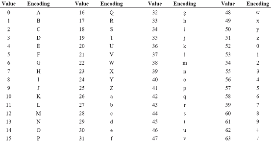
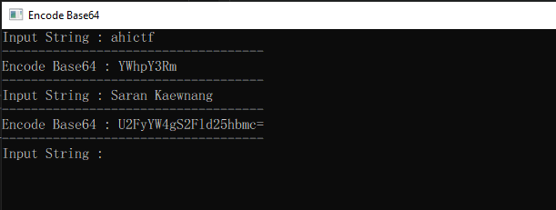

AHI CTF

#Code4Sec #ToBase64String #VB.NET
การใช้งานฟังก์ชัน ToBase64String() ในภาษา VB.NET
ToBase64String()
ToBase64String() เป็นฟังก์ชันที่มีไว้สำหรับตรวจสอบการเข้ารหัสข้อมูลรูปแบบหนึ่ง ที่จะเปลี่ยนข้อความ หรือข้อมูลต้นฉบับไปเป็นข้อความ หรือข้อมูลชุดใหม่ ที่ไม่สามารถอ่าน หรือรู้ว่าข้อมูลชุดนี้คืออะไร ซึ่งการเข้ารหัสชนิดนี้จะแทนที่ข้อมูลด้วยตัวอักษร 64 ตัว
การใช้งานฟังก์ชัน ToBase64String() ในภาษา VB.NET

จากโค้ดด้านบนจะเห็นว่ามีการประกาศตัวแปร encodedata เป็นประเภท Byte และมีการรับข้อมูล String จากผู้ใช้งานมาเก็บไว้ที่ตัวแปร ustring และเรียกใช้งาน System.Convert.ToBase64String(encodedata) เพื่อทำเข้ารหัสค่า String ให้เป็น Base64
ผลลัพธ์ที่ได้คือ
จะเห็นว่ามีการเข้ารหัสข้อมูล String ที่เราได้ใส่เข้าไป
ขอบคุณข้อมูลจาก
วิธีการเข้ารหัส และถอดรหัส BASE64 (https://thiti.dev/blog/5979/)